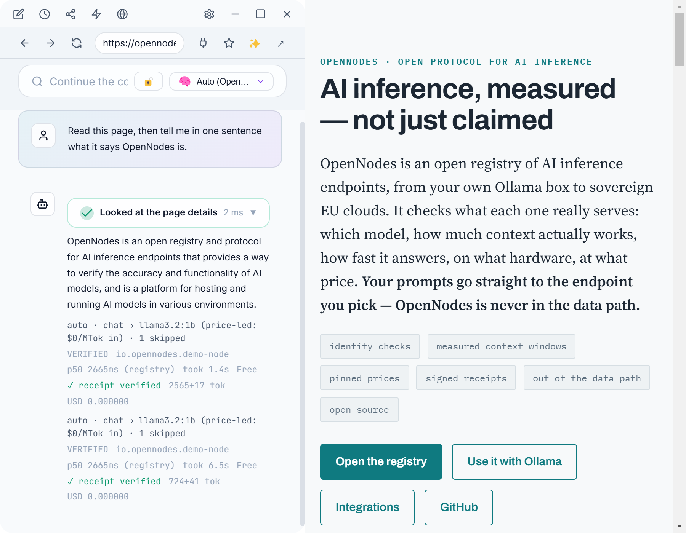

AI inference, measured — not just claimed
OpenNodes is an open registry of AI inference endpoints, from your own Ollama box to sovereign EU clouds. It checks what each one really serves: which model, how much context actually works, how fast it answers, where it runs. Your prompts go straight to the endpoint you pick — OpenNodes is never in the data path.
Or start now: npx @opennodes/ollama-router · Building in Europe? OpenNodes for Europe
| Check | Claimed in its Node Card | Measured by the registry |
|---|---|---|
| Model | bielik-1.5b-v3.0-instruct | serves that model (identity check) |
| Context window | 8,192 tokens | 8,192 tokens held in a real test |
| Server | Finland | in Finland, Hetzner network |
| Speed | not claimed | 2.2 s to first token · 35 tokens/s |
| Reliability | not claimed | 100 of the last 100 blind checks passed |
One Ollama endpoint for your laptop, your network, and verified cloud
Run one command and every Ollama app — Open WebUI, Continue, Zed, Msty, the ollama CLI — sees one model list: your local models, your other machines on the network (found automatically), and verified public nodes. auto picks a model per prompt; auto-private never leaves your network. No account, no API key; needs Node.js 22.5 or later.
npx @opennodes/ollama-router
# in another terminal, point Ollama apps at the router:
export OLLAMA_HOST=127.0.0.1:11435 # PowerShell: $env:OLLAMA_HOST="127.0.0.1:11435"
ollama run auto-private "summarize this confidential note" # local / LAN models onlyauto-private answered from a local model and the router says why; a public node answers the next prompt.Ask for the right model from where you work
MCP — Cursor, Claude Desktop, Claude Code, VS Code, any agent
Five read-only tools: recommend picks the best node and model for a task, priced and explained (the prompt is analysed on your machine; only its features are sent), plus search_offerings, get_offering, get_node and estimate.
npx @opennodes/cli mcp --print-config # paste into your MCP host's config
# no install: point a remote-MCP host at https://registry.opennodes.io/mcpAny OpenAI-compatible app
A local gateway whose onp/auto models route each request to a node you can call: free registered nodes, plus catalogs you hold a key for. Prices are pinned, receipts verified, and it fails over to the next node.
npx @opennodes/cli gateway --port 4141 # OpenAI base URL: http://127.0.0.1:4141/v1Step-by-step setup for Cursor, Claude, VS Code, Windsurf, Open WebUI, Continue, Zed, the OpenAI SDK, LangChain and LiteLLM: Integrations.
List your endpoint — and prove it
Already run an OpenAI-compatible API?
Publish a signed Node Card as a static file on your API host and give the registry a low-quota key for its checks. Nothing in your stack changes, and your verified listing replaces the imported one.
Serving with vLLM, Ollama or TGI?
The Node Kit runs a small proxy in front of your engine: it serves the card, pins prices, signs usage receipts, and registers the node. Your engine stays untouched.
pipx install onp-node
onp-node init --engine http://127.0.0.1:11434/v1 --id org.example.ai --public-url https://ai.example.orgListing is free and open to anyone who controls their domain. Both modes step by step: the Node Kit guide. Claims, questions or removal of an imported listing: operators@opennodes.io.
The discovery layer for AI inference
MCP standardized how AI reaches tools. The OpenAI API shape standardized invocation. Nothing standardizes how a client finds an inference endpoint it doesn't already know — what model it serves, on what hardware, at what price, and whether it's honest. ONP fills that gap and composes the rest from existing standards.
/.well-known/open-node.json: models, hardware, benchmarks, per-token price — signed, revisioned.- Anyone can list; no one is trusted blindly. Claiming a model you don't serve gets the node marked
disputedand dropped from search. - Ranking by published rule. Every result carries its rank explanation; claimed, measured and attested values are never blended, and there is no paid placement.
- Federated. The registry is an OpenAPI anyone can implement plus a signed, mirrorable export feed. Run your own with
npx @opennodes/registry.
Read the spec: six short documents, ONP-1 to ONP-6, and the known issues for Draft 0.2.
A client built on it
Surge is an optional reference client, a desktop "browser for MCP" whose model picker is fed live from the registry. Every call is pinned to the node's card revision and comes back with a receipt Surge verifies; private mode keeps everything on your machine and network. Pre-release: Windows installer and Surge source code.

Try it
Browse what's out there and what has been checked, or put one Ollama endpoint in front of everything you run. Run your own endpoint? List it and let the registry measure it.